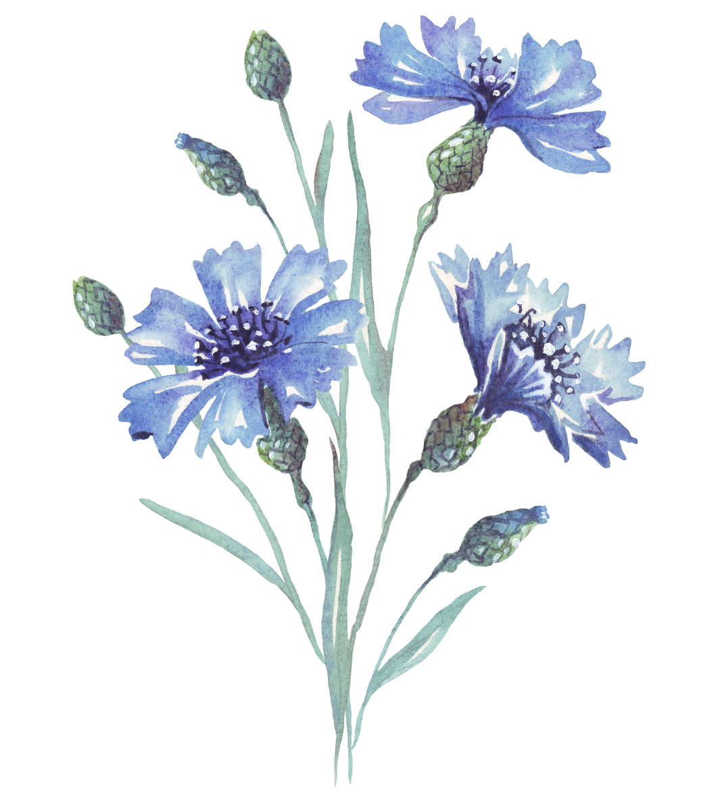

Cornflower
Asteraceae family

Cornflower, also commonly known as bachelor's button, is an annual wildflower with double 1 1/2-inch blooms that resemble miniature carnations. Cornflower grows well in just about any type of conditions but prefers full to partial sun, in soil that's on the alkaline side, and moderate temperatures between 60 and 80 degrees Fahrenheit.
Light
Thought it thrives best in full sunlight, the African iris will bloom in partial sunlight. In partial sunlight blooms may not be as vigorous. Ideally, it should get six hours of sun per day in its blooming season if possible, and afternoon sun is a bit stronger than morning sun for placement of this perennial.
How to care for Conflowers:
-
Here are the main care requirements for growing a cornflower:
- Soil
Cornflower grows best in rich, well-drained garden soil, on the alkaline side, with a pH of 7.2 to 7.8. If your soil tends toward acidic, add crushed limestone to your garden beds - Water
Cornflower needs the equivalent of 1 inch of water per week, especially during the hottest months of July and August. Allow the soil to dry slightly in between waterings, but don't let it dry completely or the plant will flop. If this happens, a good, thorough drink will usually perk it up. - Temperature and Humitity
When it comes to temperature, cornflower tolerates both a light freeze as well as a hot summer day. This plant thrives in 60 to 80 degrees F. temperatures but may need 85 to 95 degrees F. to reach flowering maturity. Cornflower grows best with an average humidity range of 30 to 50 percent. Keep a close eye on your garden during humid spells, though, as this plant is susceptible to fungal disease under these conditions.